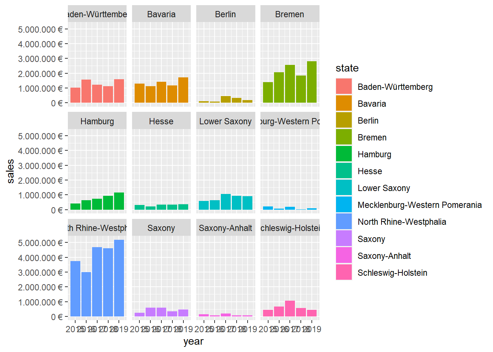
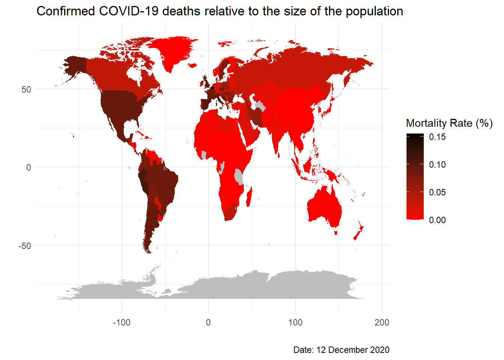

Journal (reproducible report)
Nijat Gasimov
2020-12-04
1 Challenge 1
Code for the first Challenge, sales by state are given below.
1.0.1 Loading libraries
library(tidyverse)
library(readxl)
library(lubridate)1.0.2 Importing Excel data
bikes_c1_tbl <- read_excel(path = "data-science/00_data/01_bike_sales/01_raw_data/bikes.xlsx")
orderlines_c1_tbl <- read_excel(path = "data-science/00_data/01_bike_sales/01_raw_data/orderlines.xlsx")
bikeshops_c1_tbl <- read_excel(path = "data-science/00_data/01_bike_sales/01_raw_data/bikeshops.xlsx")1.0.3 Joining data
left_join(orderlines_c1_tbl, bikes_c1_tbl, by = c("product.id" = "bike.id"))## # A tibble: 15,644 x 15
## ...1 order.id order.line order.date customer.id product.id quantity
## <chr> <dbl> <dbl> <dttm> <dbl> <dbl> <dbl>
## 1 1 1 1 2015-01-07 00:00:00 2 2681 1
## 2 2 1 2 2015-01-07 00:00:00 2 2411 1
## 3 3 2 1 2015-01-10 00:00:00 10 2629 1
## 4 4 2 2 2015-01-10 00:00:00 10 2137 1
## 5 5 3 1 2015-01-10 00:00:00 6 2367 1
## 6 6 3 2 2015-01-10 00:00:00 6 1973 1
## 7 7 3 3 2015-01-10 00:00:00 6 2422 1
## 8 8 3 4 2015-01-10 00:00:00 6 2655 1
## 9 9 3 5 2015-01-10 00:00:00 6 2247 1
## 10 10 4 1 2015-01-11 00:00:00 22 2408 1
## # ... with 15,634 more rows, and 8 more variables: model <chr>,
## # model.year <dbl>, frame.material <chr>, weight <dbl>, price <dbl>,
## # category <chr>, gender <chr>, url <chr>bike_orderlines_joined_c1_tbl <- orderlines_c1_tbl %>%
left_join(bikes_c1_tbl, by = c("product.id" = "bike.id")) %>%
left_join(bikeshops_c1_tbl, by = c("customer.id" = "bikeshop.id"))1.0.4 Wrangling data
Create new data in which you wrangle combined data:
bike_orderlines_wrangled_c1_tbl <- bike_orderlines_joined_c1_tbl %>%
#separating into city and state categories
separate(col = location,
into = c("city", "state"),
sep = ", ") %>%
#add new column to show total price
mutate(total.price = price * quantity) %>%
#erase unneeded columns
select(-...1, -gender, -url, -lat, -lng, -frame.material, -weight)1.0.5 Take out needed data
sales_by_state_c1_tbl <- bike_orderlines_wrangled_c1_tbl %>%
select(state, total.price) %>% #select the columns you'll use
group_by(state) %>% #group the rows based on common states
summarize(sales = sum(total.price)) %>% #sum up the sales by state
mutate(sales_text = scales::dollar(sales, big.mark = ".",
decimal.mark = ",",
prefix = "",
suffix = " €")) #turn the numbers to money format1.0.6 Plot the graph
sales_by_state_c1_tbl %>%
# Setup canvas with the columns state (x-axis) and sales (y-axis)
ggplot(aes(x = state, y = sales)) +
geom_col(fill = "#2DC6D6") + # Use geom_col for a bar plot
geom_label(aes(label = sales_text)) + # Adding labels to the bars
scale_y_continuous(labels = scales::dollar_format(big.mark = ".",
decimal.mark = ",",
prefix = "",
suffix = " €")) +
theme(axis.text.x = element_text(angle = 45, hjust = 1)) #rotate the x-axis
2 Challenge 2
We will continue building on the previous code, so some steps are not needed to be repeated again.
2.0.1 Manipulate data for new graph
sales_by_state_and_year_c1_tbl <- bike_orderlines_wrangled_c1_tbl %>% #create new data for visualization
select(order.date, total.price, state) %>% #take out needed column from for the new data
mutate(year = year(order.date)) %>% #add a year column using lubridate
group_by(year, state) %>%
summarise(sales = sum(total.price)) %>%
ungroup() %>%
mutate(sales_text = scales::dollar(sales, big.mark = ".",
decimal.mark = ",",
prefix = "",
suffix = " €")) #formatting the money2.0.2 Visualizing the data
sales_by_state_and_year_c1_tbl %>%
ggplot(aes(x = year, y = sales, fill = state))+ #create the plot
geom_col() + #define plot type
facet_wrap(~ state)+ #to form a different plot for each state
scale_y_continuous(labels = scales::dollar_format(big.mark = ".",
decimal.mark = ",",
prefix = "",
suffix = " €")) #formatting
#theme(axis.text.x = element_text(angle = 70, hjust = 1)) #rotate the x-axis label3 Challenge 3
For this task, I will access to Deezer (music streaming platform) API and extract my Retro music playlist which I created in 2014.
3.0.1 Load the libraries
library(httr)
library(tidyverse)
library(jsonlite)
library(purrr)3.0.2 Make request from API
resp <- GET("https://api.deezer.com/playlist/1000960231")
resp_content <- content(resp, as = "parsed")3.0.3 Wrangle data
a <- resp_content[["tracks"]][["data"]] #Extract the list containing song information
#Extract song titles from the list
Titels <- a %>%
map(purrr::pluck,"title") %>%
as_tibble("titel") %>% #save as tibble
t() #list is given in rows, transverse it to column
#Extract album names from the list
Albums <- a %>%
map(purrr::pluck, "album") %>%
map(purrr::pluck, "title") %>%
as_tibble("Album") %>%
t()
#Extract the artist names from the list
Artists <- a %>%
map(purrr::pluck, "artist") %>%
map(purrr::pluck, "name") %>%
as_tibble("Artist") %>%
t()
#Extract links to individual songs
Links <- a %>%
map(purrr::pluck, "link") %>%
as_tibble("Link") %>%
t()
#Finally, bind columns into a table and name them
Playlist <- bind_cols("Song"=Titels, "Album"= Albums, "Artist"=Artists, "Link"=Links)3.0.4 Data
Playlist## # A tibble: 175 x 4
## Song[,1] Album[,1] Artist[,1] Link[,1]
## <chr> <chr> <chr> <chr>
## 1 You MAD MEN (Music used in the ~ The Aquatones https://www.deeze~
## 2 Mrs.Robinson 60's Party The 60's Pop ~ https://www.deeze~
## 3 Gospel Boxer The National https://www.deeze~
## 4 Between the B~ Kill Rock Stars Sampler 2009 Elliott Smith https://www.deeze~
## 5 Heroes (1999 ~ Heroes (1999 Remaster) David Bowie https://www.deeze~
## 6 It's Too Late Tapestry (Legacy Edition) Carole King https://www.deeze~
## 7 Asleep (2011 ~ The World Won't Listen The Smiths https://www.deeze~
## 8 Come On Eileen Too Rye Ay Dexys Midnigh~ https://www.deeze~
## 9 Low Get On With It: The Best Of Cracker https://www.deeze~
## 10 Right Here Wa~ Repeat Offender Richard Marx https://www.deeze~
## # ... with 165 more rows4 Challenge 4
#1 Loading libraries
library(tidyverse) # Main Package - Loads dplyr, purrr, etc.
library(rvest) # HTML Hacking & Web Scraping
library(xopen) # Quickly opening URLs
library(jsonlite) # converts JSON files to R objects
library(glue) # concatenate strings
library(stringi) # character string/text processing
library(RSQLite) # working with databases
# 2. Open category page
# Arbitrarily chosen E-bike family, Mountainbike category
url_homepage <- "https://www.radon-bikes.de/e-bike/mountainbike/bikegrid/"
#xopen(url_homepage)
html_homepage <- read_html(url_homepage)
# 3. Scrape website
#Extract the product ID names
product_id_tbl <- html_homepage %>%
html_nodes(css = ".m-bikegrid__info .a-heading--small") %>%
html_text() %>%
trimws("both") %>% # erase empty space
enframe(name = "position", value = "product_id") #vector to tibble
#Extract the product prices
product_prices_tbl <- html_homepage %>%
html_nodes(css = ".currency_eur> .m-bikegrid__price--active") %>%
html_text("span") %>% # extract span attribute
enframe(name = "position", value = "product_prices") #vector to tibble
#Bind two columns
mountainbike_list_tbl <- product_id_tbl %>%
bind_cols(product_prices_tbl %>% select("product_prices"))
# 4. Creating database
# Create database
con <- RSQLite::dbConnect(drv = SQLite(),
dbname = "data-science/00_data/Mountain_bikes.sqlite")
# Add tables to database
dbWriteTable(con, "product_id", product_id_tbl, overwrite=TRUE)
dbWriteTable(con, "product_prices", product_prices_tbl, overwrite=TRUE)
# 5. Call database
# Return the name of tables
dbListTables(con)## [1] "product_id" "product_prices"# Return any data you need
tbl(con, "product_id")## # Source: table<product_id> [?? x 2]
## # Database: sqlite 3.33.0 [C:\Users\ACER\Google Drive\Studies\Business &
## # Management\Data
## # Science\Repository\ws20-business-data-science-basics---lab-journal-nijatgasimovv\data-science\00_data\Mountain_bikes.sqlite]
## position product_id
## <int> <chr>
## 1 1 RENDER 8.0
## 2 2 RENDER 9.0
## 3 3 RENDER 10.0
## 4 4 RENDER 10.0 HD SUPREME
## 5 5 JEALOUS AL HYBRID 8.0
## 6 6 JEALOUS AL HYBRID 8.0
## 7 7 JEALOUS AL HYBRID 9.0
## 8 8 ZR TEAM HYBRID 6.0 CX 500
## 9 9 ZR TEAM HYBRID 8.0 CX 500
## 10 10 ZR TEAM HYBRID PERFORMANCE 7.0 500
## # ... with more rowstbl(con, "product_prices")## # Source: table<product_prices> [?? x 2]
## # Database: sqlite 3.33.0 [C:\Users\ACER\Google Drive\Studies\Business &
## # Management\Data
## # Science\Repository\ws20-business-data-science-basics---lab-journal-nijatgasimovv\data-science\00_data\Mountain_bikes.sqlite]
## position product_prices
## <int> <chr>
## 1 1 4199 €
## 2 2 4999 €
## 3 3 5799 €
## 4 4 6799 €
## 5 5 2699 €
## 6 6 2699 €
## 7 7 2999 €
## 8 8 1999 €
## 9 9 2299 €
## 10 10 1699 €
## # ... with more rows# Disconnect from database after use
dbDisconnect(con)
con## <SQLiteConnection>
## DISCONNECTED5 Challenge 5
5.1 Question 1
# 1. Load libraries
library(tidyverse)
library(vroom)
library(data.table)
library(lubridate)
# 2. Data import
# 2.1 Load Assignee data
# Includes datasets for all 3 tasks
col_types_ass <- list(
id = col_character(),
type = col_character(),
name_first = col_character(),
name_last = col_character(),
organization = col_character()
)
assignee_tbl <- vroom(
file = "assignee.tsv/assignee.tsv",
delim = "\t",
col_types = col_types_ass,
na = c("", "NA", "NULL")
)
# 2.2 Load Patent Assignee data
col_types_pat_ass <- list(
patent_id = col_character(),
assignee_id = col_character(),
location_id = col_character()
)
patent_ass_tbl <- vroom(
file = "patent_assignee.tsv/patent_assignee.tsv",
delim = "\t",
col_types = col_types_pat_ass,
na = c("", "NA", "NULL")
)
# 2.3 Load Patent data
#col_types_patent <- list(
# id = col_character(),
# type = col_character(),
# number = col_character(),
# country = col_character(),
# date = col_date("%Y-%m-%d"),
# abstract = col_character(),
# title = col_character(),
# kind = col_character(),
# num_claims = col_double(),
# filename = col_character(),
# withdrawn = col_double()
#)
#patent_tbl <- vroom(
# file = "patent.tsv",
# delim = "\t",
# col_types = col_types_patent,
# na = c("", "NA", "NULL")
#)
# 2.4 Load uspc data
#col_types_uspc <- list(
# uuid = col_character(),
# patent_id = col_character(),
# mainclass_id = col_character(),
# subclass_id = col_character(),
# sequence = col_character()
#)
#uspc_tbl <- vroom(
# file = "uspc.tsv",
# delim = "\t",
# col_types = col_types_uspc,
# na = c("", "NA", "NULL")
# )
# 3. Convert to data.table (optionally added to use if needed)
#class(assignee_tbl)
#setDT(assignee_tbl)
#class(assignee_tbl)
#assignee_tbl %>% glimpse()
#class(patent_ass_tbl)
#setDT(patent_ass_tbl)
#class(patent_ass_tbl)
#patent_ass_tbl %>% glimpse()
# 4. Question 1
# 4.1 Merging data
# Combining two datasets
combined_data <- patent_ass_tbl %>%
left_join(assignee_tbl, by = c("assignee_id" = "id"))
# 4.2 Wrangle data
top_companies_tbl <- combined_data %>%
filter(type == 2) %>% # Filtering US organizations
group_by(organization) %>%
count() %>%
ungroup() %>%
arrange(desc(n))
print(top_companies_tbl, n=10)## # A tibble: 222,788 x 2
## organization n
## <chr> <int>
## 1 International Business Machines Corporation 139091
## 2 General Electric Company 47121
## 3 Intel Corporation 42156
## 4 Hewlett-Packard Development Company, L.P. 35572
## 5 Microsoft Corporation 30085
## 6 Micron Technology, Inc. 28000
## 7 QUALCOMM Incorporated 24702
## 8 Texas Instruments Incorporated 24181
## 9 Xerox Corporation 23173
## 10 Apple Inc. 21820
## # ... with 222,778 more rows5.2 Question 2
For Questions 2 and 3, I will only present my code. Datasets were too large to handle for my computer, and it kept crashing no matter how many tries. I am not sure if these codes would work if run, but general idea for the solution to the problem is presented.
# 5.1 Merging data
#combined_data_2 <- combined_data %>%
# left_join(patent_tbl, by = c("patent_id" = "id"))
# 5.2 Wrangle data
#top_companies_2019_tbl <- combined_data_2 %>%
# filter(type == 2) %>% # filtering US companies
# filter(date == year(2019)) %>% # filtering the year 2019 with lubridate
# group_by(organization) %>%
# count() %>%
# ungroup() %>%
# arrange(desc(n))
#
#print(top_companies_2019_tbl, n=10)5.3 Question 3
# 6.1 Merging data
#combined_data_3 <- combined_data %>%
# left_join(uspc_tbl, by = c("patent_id" = "id"))
# 6.2 Wrangle data
#global_companies <- combined_data_3 %>%
# filter(type == 2 | type == 3) %>%
# unique(by="id")
#global_top10 <- global_companies %>%
# group_by(organization) %>%
# count(organization, sort=TRUE, name = "number_patent") %>%
# ungroup() %>%
# arrange(desc(n))
# head(10)
#top5_uspto <- semi_join(global_companies, global_top10, by = organization) %>%
# count(mainclass_id, sort=TRUE, name='n') %>%
# head(5)
#top5_uspto6 Challenge 6
# 1. Load libraries and dataset
library(tidyverse)
library(lubridate)
covid_data_tbl <- read_csv("https://opendata.ecdc.europa.eu/covid19/casedistribution/csv")
# 2. Data wrangling
covid_wrangled_data_tbl <- covid_data_tbl %>%
filter(year == 2020) %>% # only 2020 data will be displayed
select(dateRep, day, month, cases, countriesAndTerritories) %>%
rename (country = countriesAndTerritories) %>% # for ease of coding
mutate(date_2 = lubridate::dmy(dateRep)) %>% # create another date column in correct form as input for visualization
filter(country == "Germany"| country =="France"|country == "United_Kingdom"|country =="United_States_of_America"|country == "Spain") %>%
arrange(day) %>%
arrange(month) %>% # arranging in chronological order
group_by(country) %>%
mutate(cum_num = cumsum(cases)) %>% # cumulative sum of COVID cases per country
ungroup() %>%
group_by(country) %>%
arrange(country) %>% # arrange the list country-by-country
ungroup()
# 3. Data visualization
covid_wrangled_data_tbl %>%
ggplot(aes(date_2, cum_num, color = country)) +
geom_line(size=0.8, aes(color = country)) +
# 4. Formatting
scale_x_date(date_labels = "%b", date_breaks = "1 month") + # each month will be displayed in graph with names
theme(
axis.text.x = element_text(
angle =
60,
hjust = 1)# tilt for ease of reading
) +
scale_colour_manual(values = c("purple", "green", "blue", "orange", "red"))+ # manually select colors of lines
#scale_color_brewer(RColorBrewer::brewer.pal(n = 5, name = "Accent")[5])+ # or alternatively select a color brewer
scale_y_continuous(breaks = seq(0, 15000000, by=2500000), # display cases with 2.5 million case breaks
labels = scales::dollar_format(scale = 1e-6,
prefix = "",
suffix = " M")) +
labs(
title = "Cumulative COVID-19 cases in 5 western countries",
subtitle = " ",
caption = "As shown, the numbers in USA are growing exponentially",
x = "Year 2020",
y = "Cumulative Cases",
color = "Countries:" # Legend text
) +
theme_minimal() +
theme(
legend.position = "bottom",
plot.title = element_text(face = "bold"),
plot.caption = element_text(face = "bold.italic")
) 
7 Challenge 7
# 1. Load libraries and dataset
library(tidyverse)
library(maps)
library(scales)
library(ggplot2)
covid_data_tbl <- read_csv("https://opendata.ecdc.europa.eu/covid19/casedistribution/csv")
world <- map_data("world")
# 2. Wrangle data
map_data_tbl <- covid_data_tbl %>%
select(deaths, countriesAndTerritories, popData2019) %>%
group_by(countriesAndTerritories, popData2019) %>%
summarise(total_death = sum(deaths)) %>%
ungroup() %>%
mutate(dead_by_pop = 100*(total_death / popData2019)) %>% #percentage
mutate(across(countriesAndTerritories, str_replace_all, "_", " ")) %>%
mutate(countriesAndTerritories = case_when(
countriesAndTerritories == "United Kingdom" ~ "UK",
countriesAndTerritories == "United States of America" ~ "USA",
countriesAndTerritories == "Czechia" ~ "Czech Republic",
TRUE ~ countriesAndTerritories
))
joined_data <-right_join(map_data_tbl, world, by=c("countriesAndTerritories"="region"))
# 3. Visualize data
joined_data %>%
ggplot() +
geom_map(aes(map_id = countriesAndTerritories,
x=long,
y=lat),
map = world) +
geom_map(aes(fill = dead_by_pop,
map_id = countriesAndTerritories),
map = world) +
scale_fill_gradient(low = "red",
high = "black",
na.value = "grey",
name = "Mortality Rate (%)")+
labs(
title = "Confirmed COVID-19 deaths relative to the size of the population",
caption = "Date: 12 December 2020",
x = "",
y = "") +
theme_minimal()